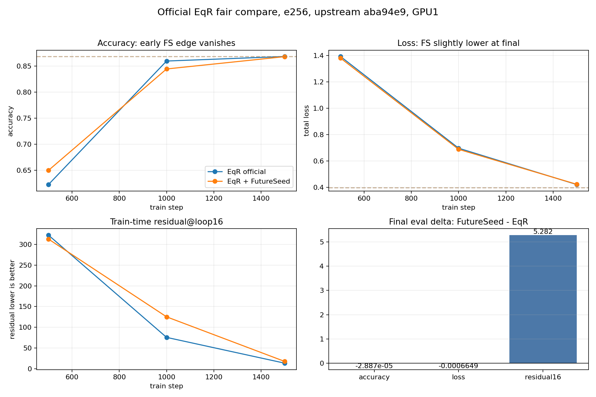

Official EqR e256 FutureSeed Compare
Conclusion: FutureSeed gives an early opening advantage, but it does not beat clean official EqR after matched e256 training. Final exact is 0 for both; final accuracy is essentially tied; clean EqR has better loop residual.
Launcher SHA aca164e, upstream EqR SHA aba94e9, GPU1 only.

| Readout | EqR official | EqR + FutureSeed | FS - EqR |
|---|---|---|---|
| step500 accuracy | 0.622738 | 0.649879 | +0.027141 |
| step1000 accuracy | 0.859538 | 0.844339 | -0.015199 |
| final accuracy | 0.868250 | 0.868221 | -0.000029 |
| final exact | 0.000000 | 0.000000 | 0.000000 |
| final total loss | 0.398811 | 0.398146 | -0.000665 |
| final residual16 | 404.176 | 409.458 | +5.282 |
Next: no more seed sweep here. Test a generic learned FutureSeed schedule/state interaction: strong early direction, reduced or gated influence after opening.